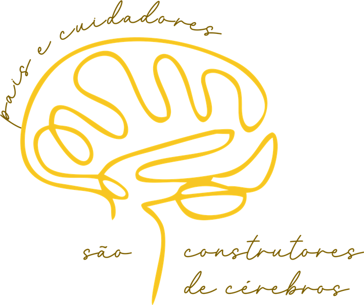

<meta charset="utf-8">
<meta name="viewport" content="width=device-width, initial-scale=1, viewport-fit=cover">
<title>Construtores de Cérebros</title>
<meta name="claude:viewport-fit-sides" content="cover">
<meta name="robots" content="noindex, nofollow">
<meta name="description" content="Pais e Cuidadores são Construtores de Cérebros: programa de parentalidade positiva da UFC para famílias com crianças de 0 a 5 anos e gestantes.">
<link rel="preconnect" href="https://fonts.googleapis.com">
<link rel="preconnect" href="https://fonts.gstatic.com" crossorigin>
<link rel="stylesheet" href="https://fonts.googleapis.com/css2?family=Nunito:wght@700;800&family=Nunito+Sans:wght@400;600&family=Sacramento&display=swap">
<style>
/* Layout: uma página inicial curta, no ritmo do ParentData (um bloco = uma ideia, muito respiro), e o detalhe em páginas próprias.
   Tokens com os mesmos nomes do design system no Figma (code syntax das variáveis). Tema único: claro, como no design system. */
:root{
  color-scheme:light;
  /* Primitivos */
  --ouro-50:#FFFBEB; --ouro-100:#FDF0C4; --ouro-200:#FBE38A; --ouro-300:#F9D452; --ouro-400:#F7C623; --ouro-500:#DDA80C; --ouro-700:#946F02; --ouro-800:#785C00; --ouro-900:#4D3B00;
  --areia-0:#FFFFFF; --areia-50:#FBF8F1; --areia-100:#F4EFE4; --areia-200:#E7E0D1; --areia-400:#ADA38D; --areia-600:#645B49; --areia-700:#4A4234; --areia-900:#211D16;
  --ceu-100:#E0EEF7; --ceu-300:#9CC6E3; --ceu-500:#4A8DBE; --ceu-700:#2E6690;
  --salvia-100:#E3EFE0; --salvia-300:#A9CBA0; --salvia-500:#5E9A57; --salvia-700:#3E6E3A;
  --terracota-100:#FBE3DA; --terracota-300:#EFA58C; --terracota-500:#D9643F; --terracota-700:#A8442A;
  /* Cor (semântica) */
  --cor-bg-canvas:var(--areia-50); --cor-bg-surface:var(--areia-0); --cor-bg-surface-muted:var(--areia-100);
  --cor-bg-brand:var(--ouro-400); --cor-bg-brand-hover:var(--ouro-300); --cor-bg-brand-pressed:var(--ouro-500); --cor-bg-brand-subtle:var(--ouro-100);
  --cor-bg-strong:var(--ouro-800); --cor-bg-strong-hover:var(--ouro-700);
  --cor-bg-success-subtle:var(--salvia-100); --cor-bg-info-subtle:var(--ceu-100); --cor-bg-danger-subtle:var(--terracota-100);
  --cor-text-primary:var(--areia-900); --cor-text-secondary:var(--areia-600); --cor-text-brand:var(--ouro-800); --cor-text-on-brand:var(--ouro-900); --cor-text-on-strong:var(--areia-0);
  --cor-text-success:var(--salvia-700); --cor-text-info:var(--ceu-700); --cor-text-danger:var(--terracota-700);
  --cor-border-default:var(--areia-200); --cor-border-strong:var(--areia-400); --cor-border-brand:var(--ouro-500); --cor-border-focus:var(--ceu-500); --cor-border-danger:var(--terracota-500);
  --cor-icon-default:var(--areia-700); --cor-icon-brand:var(--ouro-700);
  --cor-unidade-1:var(--ouro-400); --cor-unidade-2:var(--ceu-300); --cor-unidade-3:var(--salvia-300); --cor-unidade-4:var(--terracota-300);
  /* Espaçamento e forma */
  --espaco-1:4px; --espaco-2:8px; --espaco-3:12px; --espaco-4:16px; --espaco-5:24px; --espaco-6:32px; --espaco-7:48px; --espaco-8:64px;
  --raio-sm:8px; --raio-md:12px; --raio-lg:20px; --raio-xl:28px; --raio-full:999px;
  --borda-fina:1px; --borda-media:2px;
  /* Sombras */
  --sombra-suave:0 1px 3px rgba(77,59,0,.08),0 1px 2px rgba(77,59,0,.06);
  --sombra-media:0 4px 12px -2px rgba(77,59,0,.10),0 2px 4px -1px rgba(77,59,0,.06);
  /* Famílias */
  --f-titulo:"Nunito",ui-rounded,"Segoe UI",system-ui,sans-serif;
  --f-corpo:"Nunito Sans","Segoe UI",system-ui,-apple-system,sans-serif;
  --f-acento:"Sacramento","Segoe Script","Brush Script MT",cursive;
}
*,*::before,*::after{box-sizing:border-box}
[hidden]{display:none!important}
img{max-width:100%}
body{margin:0;background:var(--cor-bg-canvas);color:var(--cor-text-primary);font-family:var(--f-corpo);font-size:16px;line-height:24px;-webkit-font-smoothing:antialiased}
body::before{content:"";position:fixed;inset:0 0 auto;height:env(safe-area-inset-top,0px);z-index:10;background:var(--cor-bg-surface)}
h1,h2,h3,h4,p,ul,ol,dl,dd,figure,blockquote{margin:0}
ul,ol{padding:0;list-style:none}
a{color:inherit}
:focus-visible{outline:var(--borda-media) solid var(--cor-border-focus);outline-offset:3px}
@media (prefers-reduced-motion:no-preference){html{scroll-behavior:smooth}}

/* Estilos de texto do design system */
.t-display{font:800 48px/56px var(--f-titulo);letter-spacing:-.5px;text-wrap:balance}
.t-h1{font:800 36px/44px var(--f-titulo);letter-spacing:-.3px;text-wrap:balance}
.t-h2{font:700 28px/36px var(--f-titulo);text-wrap:balance}
.t-h3{font:700 22px/30px var(--f-titulo);text-wrap:balance}
.t-h4{font:700 18px/26px var(--f-titulo)}
.t-corpo-g{font:400 18px/28px var(--f-corpo)}
.t-corpo-m{font:400 16px/24px var(--f-corpo)}
.t-corpo-p{font:400 14px/20px var(--f-corpo)}
.t-rotulo-g{font:700 16px/20px var(--f-titulo)}
.t-rotulo-m{font:700 14px/18px var(--f-titulo)}
.t-legenda{font:600 12px/16px var(--f-corpo);letter-spacing:.2px}
.t-sobretitulo{font:800 12px/16px var(--f-titulo);letter-spacing:1.2px;text-transform:uppercase;color:var(--cor-text-brand)}
.t-acento-g{font:400 56px/64px var(--f-acento);color:var(--cor-text-brand)}
.t-acento-m{font:400 36px/44px var(--f-acento);color:var(--cor-text-brand)}
.sec{color:var(--cor-text-secondary)}
@media (max-width:720px){
  .t-display{font-size:36px;line-height:44px}
  .t-h1{font-size:28px;line-height:36px}
  .t-acento-g{font-size:44px;line-height:52px}
}

/* Estrutura */
.wrap{max-width:1120px;margin-inline:auto;padding-left:max(var(--espaco-5),env(safe-area-inset-left,0px));padding-right:max(var(--espaco-5),env(safe-area-inset-right,0px))}
@media (max-width:520px){.wrap{padding-left:max(16px,env(safe-area-inset-left,0px));padding-right:max(16px,env(safe-area-inset-right,0px))}}
.secao{padding-block:96px}
.secao.branca{background:var(--cor-bg-surface)}
@media (max-width:720px){.secao{padding-block:var(--espaco-8)}}
.cabeca{display:grid;gap:var(--espaco-3);max-width:640px;margin-bottom:var(--espaco-7)}
.cabeca.centro{margin-inline:auto;text-align:center}
.linha-titulo{display:flex;flex-wrap:wrap;justify-content:space-between;align-items:end;gap:var(--espaco-4);margin-bottom:var(--espaco-7)}
.linha-titulo .cabeca{margin-bottom:0}

/* Botão */
.botao{display:inline-flex;align-items:center;justify-content:center;gap:var(--espaco-2);height:48px;padding:0 var(--espaco-5);border-radius:var(--raio-full);font:700 16px/20px var(--f-titulo);text-decoration:none;border:var(--borda-media) solid transparent;cursor:pointer;white-space:nowrap}
.botao svg{width:20px;height:20px;flex:none}
.botao--grande{height:56px;padding:0 var(--espaco-6)}
.botao--primario{background:var(--cor-bg-brand);color:var(--cor-text-on-brand)}
.botao--primario:hover{background:var(--cor-bg-brand-hover)}
.botao--primario:active{background:var(--cor-bg-brand-pressed)}
.botao--secundario{background:var(--cor-bg-strong);color:var(--cor-text-on-strong)}
.botao--secundario:hover{background:var(--cor-bg-strong-hover)}
.botao--contorno{background:transparent;color:var(--cor-text-brand);border-color:var(--cor-border-brand)}
.botao--contorno:hover,.botao--texto:hover{background:var(--cor-bg-brand-subtle)}
.botao--texto{background:transparent;color:var(--cor-text-brand);padding:0 var(--espaco-3)}
.botao--claro{background:var(--areia-0);color:var(--cor-text-brand)}
.botao--claro:hover{background:var(--ouro-100)}
.botoes{display:flex;flex-wrap:wrap;gap:var(--espaco-3)}

/* Tag */
.tag{display:inline-flex;align-items:center;padding:var(--espaco-1) var(--espaco-3);border-radius:var(--raio-full);font:700 14px/18px var(--f-titulo);white-space:nowrap;text-decoration:none;border:0}
.tag--ouro{background:var(--cor-bg-brand-subtle);color:var(--cor-text-brand)}
.tag--ceu{background:var(--cor-bg-info-subtle);color:var(--cor-text-info)}
.tag--salvia{background:var(--cor-bg-success-subtle);color:var(--cor-text-success)}
.tag--terracota{background:var(--cor-bg-danger-subtle);color:var(--cor-text-danger)}
.tag--areia{background:var(--cor-bg-surface-muted);color:var(--cor-text-secondary)}
a.tag:hover,button.tag:hover{filter:brightness(.96);text-decoration:underline}
.pendente{display:inline-block;font:600 12px/16px var(--f-corpo);color:var(--cor-text-danger);border:1px dashed var(--cor-border-danger);border-radius:var(--raio-sm);padding:1px 6px;vertical-align:middle}

/* Card */
.card{background:var(--cor-bg-surface);border:var(--borda-fina) solid var(--cor-border-default);border-radius:var(--raio-lg);box-shadow:var(--sombra-suave);padding:var(--espaco-5);display:grid;gap:var(--espaco-3);align-content:start;min-width:0}
.grade-3{display:grid;grid-template-columns:repeat(3,minmax(0,1fr));gap:var(--espaco-5)}
.grade-4{display:grid;grid-template-columns:repeat(4,minmax(0,1fr));gap:var(--espaco-5)}
@media (max-width:980px){.grade-4{grid-template-columns:repeat(2,minmax(0,1fr))}}
@media (max-width:820px){.grade-3{grid-template-columns:1fr}}
@media (max-width:560px){.grade-4{grid-template-columns:1fr}}

/* Ícone */
.ico{width:24px;height:24px;flex:none;color:var(--cor-icon-default)}
.ico-18{width:18px;height:18px}

/* Card de encontro */
.encontro{padding:0;overflow:hidden;gap:0;box-shadow:var(--sombra-suave)}
.encontro .faixa{height:8px;background:var(--cor-unidade-2)}
.encontro .conteudo{padding:var(--espaco-5);display:grid;gap:var(--espaco-3)}
.encontro .topo{display:flex;justify-content:space-between;align-items:center;gap:var(--espaco-3)}
.encontro .topo .t-sobretitulo{color:var(--cor-text-secondary)}
.meta{display:grid;gap:6px}
.meta li{display:flex;align-items:center;gap:var(--espaco-2);color:var(--cor-text-secondary)}

/* Passo e Progresso */
.progresso{display:grid;gap:var(--espaco-3)}
.progresso .cab{display:flex;justify-content:space-between;align-items:center;gap:var(--espaco-3)}
.trilha{display:flex;align-items:center}
.trilha .linha{flex:1;height:2px;background:var(--cor-border-strong);min-width:4px}
.trilha .linha.feita{background:var(--cor-bg-strong)}
.passo{width:32px;height:32px;border-radius:50%;display:grid;place-items:center;flex:none;font:800 13px/1 var(--f-titulo);font-variant-numeric:tabular-nums}
.passo--concluido{background:var(--cor-bg-strong);color:var(--cor-text-on-strong)}
.passo--atual{background:var(--cor-bg-brand);color:var(--cor-text-on-brand);border:var(--borda-media) solid var(--cor-bg-strong);box-shadow:0 0 0 4px rgba(247,198,35,.45)}
.passo--futuro{background:var(--cor-bg-surface);color:var(--cor-text-secondary);border:var(--borda-fina) solid var(--cor-border-strong)}
.passo svg{width:16px;height:16px}
.unidades{display:flex;gap:var(--espaco-1)}
.unidades span{height:6px;border-radius:var(--raio-full)}
.legenda-unidades{display:flex;flex-wrap:wrap;gap:var(--espaco-2) var(--espaco-4)}
.legenda-unidades li{display:flex;align-items:center;gap:6px}
.legenda-unidades i{width:10px;height:10px;border-radius:50%;display:inline-block}
@media (max-width:420px){.passo{width:24px;height:24px;font-size:11px}.passo svg{width:13px;height:13px}}

/* Aviso */
.aviso{display:grid;grid-template-columns:24px 1fr;gap:var(--espaco-3);padding:var(--espaco-4);border-radius:var(--raio-md)}
.aviso .ico{margin-top:-2px}
.aviso > div{display:grid;gap:var(--espaco-1);min-width:0}
.aviso--dica{background:var(--cor-bg-info-subtle)} .aviso--dica .ico{color:var(--ceu-500)} .aviso--dica .titulo{color:var(--cor-text-info)}
.aviso--sucesso{background:var(--cor-bg-success-subtle)} .aviso--sucesso .ico{color:var(--salvia-500)} .aviso--sucesso .titulo{color:var(--cor-text-success)}
.aviso--atencao{background:var(--cor-bg-brand-subtle)} .aviso--atencao .ico{color:var(--cor-icon-brand)} .aviso--atencao .titulo{color:var(--cor-text-brand)}
.aviso--erro{background:var(--cor-bg-danger-subtle)} .aviso--erro .ico{color:var(--terracota-500)} .aviso--erro .titulo{color:var(--cor-text-danger)}

/* Campo de texto */
.campo{display:grid;gap:var(--espaco-2);min-width:0}
.campo label{font:700 14px/18px var(--f-titulo)}
.campo .caixa{width:100%;height:48px;padding:0 var(--espaco-4);border-radius:var(--raio-md);border:var(--borda-fina) solid var(--cor-border-strong);background:var(--cor-bg-surface);color:var(--cor-text-primary);font:400 16px/24px var(--f-corpo)}
.campo textarea.caixa{height:120px;padding:var(--espaco-3) var(--espaco-4);resize:vertical}
.campo .caixa::placeholder{color:var(--cor-text-secondary)}
.campo .caixa:focus{outline:none;border:var(--borda-media) solid var(--cor-border-focus);box-shadow:0 0 0 4px rgba(74,141,190,.25)}
.campo .ajuda{font:600 12px/16px var(--f-corpo);color:var(--cor-text-secondary)}
.campo.erro .caixa{border:var(--borda-media) solid var(--cor-border-danger)}
.campo.erro .ajuda{color:var(--cor-text-danger)}

/* Cabeçalho */
.topo-site{position:sticky;top:env(safe-area-inset-top,0px);z-index:20;background:var(--cor-bg-surface);border-bottom:var(--borda-fina) solid var(--cor-border-default)}
.topo-site .wrap{display:flex;align-items:center;justify-content:space-between;gap:var(--espaco-5);height:80px}
.marca{display:flex;flex-direction:column;text-decoration:none;line-height:1}
.marca small{font:400 22px/22px var(--f-acento);color:var(--cor-text-brand)}
.marca b{font:800 18px/22px var(--f-titulo)}
.menu{display:flex;align-items:center;gap:var(--espaco-1)}
.menu a:not(.botao){font:700 16px/20px var(--f-titulo);text-decoration:none;padding:10px var(--espaco-3);border-radius:var(--raio-full);white-space:nowrap}
.menu a:not(.botao):hover{background:var(--cor-bg-surface-muted)}
.menu a[aria-current="page"]{background:var(--cor-bg-brand-subtle);color:var(--cor-text-brand)}
.menu .botao{margin-left:var(--espaco-3)}
.abre-menu{display:none;height:48px;padding:0 var(--espaco-4);border-radius:var(--raio-full);border:var(--borda-fina) solid var(--cor-border-strong);background:var(--cor-bg-surface);font:700 16px/20px var(--f-titulo);color:var(--cor-text-primary);gap:var(--espaco-2);align-items:center;cursor:pointer}
@media (max-width:1000px){
  .abre-menu{display:inline-flex}
  .menu{display:none;position:absolute;left:0;right:0;top:100%;flex-direction:column;align-items:stretch;background:var(--cor-bg-surface);border-bottom:var(--borda-fina) solid var(--cor-border-default);box-shadow:var(--sombra-media);padding:var(--espaco-3) max(16px,env(safe-area-inset-right,0px)) var(--espaco-5) max(16px,env(safe-area-inset-left,0px))}
  .menu.aberto{display:flex}
  .menu a:not(.botao){padding:14px var(--espaco-3)}
  .menu .botao{margin:var(--espaco-3) 0 0}
}

/* Início */
.hero{padding-block:var(--espaco-8) 96px}
.hero .wrap{display:grid;grid-template-columns:1.1fr .9fr;gap:var(--espaco-7);align-items:center}
.hero .texto{display:grid;gap:var(--espaco-5);min-width:0}
.hero .arte{display:grid;place-items:center}
.circulo{width:100%;max-width:440px;aspect-ratio:1;border-radius:50%;background:var(--cor-bg-brand-subtle);display:grid;place-items:center}
.circulo img{width:76%;height:auto}
@media (max-width:860px){.hero .wrap{grid-template-columns:1fr}.hero .arte{order:-1;justify-items:start}.circulo{max-width:220px}.hero{padding-block:var(--espaco-6) var(--espaco-8)}}

.dica .fase{display:flex;flex-wrap:wrap;align-items:center;gap:var(--espaco-2)}
.dica h3{font:700 18px/26px var(--f-titulo)}
.dica p{color:var(--cor-text-secondary)}
.dica .rodape{margin-top:var(--espaco-1)}
.buscados{margin-top:var(--espaco-6);display:flex;flex-wrap:wrap;align-items:center;gap:var(--espaco-2)}
.buscados .t-rotulo-m{margin-right:var(--espaco-2)}

.dois{display:grid;grid-template-columns:1fr 1fr;gap:var(--espaco-8);align-items:center}
@media (max-width:900px){.dois{grid-template-columns:1fr;gap:var(--espaco-7)}}
.dois .texto{display:grid;gap:var(--espaco-5);min-width:0}
.fatos{display:grid;gap:var(--espaco-3)}
.fatos li{display:flex;gap:var(--espaco-3);align-items:center}
.pilha{display:grid;gap:var(--espaco-5);min-width:0}

.modulos{display:grid;grid-template-columns:repeat(2,minmax(0,1fr));gap:var(--espaco-5)}
@media (max-width:820px){.modulos{grid-template-columns:1fr}}
.modulo .conteudo{gap:var(--espaco-4)}
.modulo .botao{justify-self:start}
.tabela-grupos{width:100%;border-collapse:collapse;font:400 16px/24px var(--f-corpo)}
.tabela-grupos th{font:700 14px/18px var(--f-titulo);text-align:left;color:var(--cor-text-secondary);padding:var(--espaco-3) var(--espaco-4);border-bottom:var(--borda-media) solid var(--cor-border-default)}
.tabela-grupos td{padding:var(--espaco-3) var(--espaco-4);border-bottom:var(--borda-fina) solid var(--cor-border-default)}
.tabela-grupos td.num,.tabela-grupos th.num{text-align:right;font-variant-numeric:tabular-nums}
.tabela-grupos tfoot td{font-weight:700;border-bottom:0}
.rolagem{overflow-x:auto;background:var(--cor-bg-surface);border:var(--borda-fina) solid var(--cor-border-default);border-radius:var(--raio-lg)}
.membros{display:grid;grid-template-columns:repeat(auto-fill,minmax(240px,1fr));gap:var(--espaco-3) var(--espaco-5)}
.membros li{display:grid;gap:2px;padding-block:var(--espaco-3);border-top:var(--borda-fina) solid var(--cor-border-default)}
.membros li span{color:var(--cor-text-secondary)}
.subtitulo-equipe{margin:var(--espaco-7) 0 var(--espaco-4)}
.numeros{display:grid;grid-template-columns:repeat(3,minmax(0,1fr));gap:var(--espaco-6);text-align:center}
@media (max-width:720px){.numeros{grid-template-columns:1fr;gap:var(--espaco-6)}}
.numero{display:grid;gap:var(--espaco-2);justify-items:center}
.numero b{font:800 48px/56px var(--f-titulo);color:var(--cor-text-brand);font-variant-numeric:tabular-nums}
.numero p{max-width:260px}
.numero .t-legenda{color:var(--cor-text-secondary)}
.destaque-pesquisa{margin:var(--espaco-7) auto 0;max-width:760px}

.citacao{background:var(--cor-bg-brand-subtle);border-radius:var(--raio-xl);padding:var(--espaco-7);display:grid;gap:var(--espaco-4)}
.citacao blockquote{font:700 28px/36px var(--f-titulo);text-wrap:balance}
.citacao figcaption{color:var(--cor-text-secondary)}
@media (max-width:560px){.citacao{padding:var(--espaco-6)}.citacao blockquote{font-size:22px;line-height:30px}}

.apoios{display:flex;flex-wrap:wrap;gap:var(--espaco-3)}
.apoio{background:var(--cor-bg-surface);border:var(--borda-fina) solid var(--cor-border-default);border-radius:var(--raio-md);padding:var(--espaco-3) var(--espaco-4);font:700 14px/18px var(--f-titulo);color:var(--cor-text-secondary)}

.chamada{background:var(--cor-bg-strong);color:var(--cor-text-on-strong);border-radius:var(--raio-xl);padding:var(--espaco-7);display:flex;flex-wrap:wrap;justify-content:space-between;align-items:center;gap:var(--espaco-5)}
.chamada .t-h1{color:var(--cor-text-on-strong)}
.chamada p{opacity:.9;max-width:560px}
.chamada > div{display:grid;gap:var(--espaco-3)}
@media (max-width:560px){.chamada{padding:var(--espaco-6)}}

.duvidas{max-width:760px;margin-inline:auto;display:grid;border-top:var(--borda-fina) solid var(--cor-border-default)}
.duvidas details{border-bottom:var(--borda-fina) solid var(--cor-border-default)}
.duvidas summary{cursor:pointer;list-style:none;display:flex;justify-content:space-between;gap:var(--espaco-4);align-items:center;padding:var(--espaco-5) 0;font:700 18px/26px var(--f-titulo)}
.duvidas summary::-webkit-details-marker{display:none}
.duvidas summary svg{width:24px;height:24px;color:var(--cor-icon-brand);transition:transform .2s;flex:none}
.duvidas details[open] summary svg{transform:rotate(45deg)}
.duvidas details p{padding-bottom:var(--espaco-5);color:var(--cor-text-secondary);max-width:65ch}

/* Páginas internas */
.cab-pagina{padding-block:var(--espaco-8) var(--espaco-7)}
.cab-pagina .wrap{display:grid;gap:var(--espaco-3)}
.cab-pagina p.t-corpo-g{max-width:680px}
.abas{display:flex;flex-wrap:wrap;gap:var(--espaco-2);margin-bottom:var(--espaco-6)}
.aba{height:40px;padding:0 var(--espaco-4);border-radius:var(--raio-full);border:var(--borda-fina) solid var(--cor-border-strong);background:var(--cor-bg-surface);font:700 14px/18px var(--f-titulo);color:var(--cor-text-primary);cursor:pointer}
.aba:hover{background:var(--cor-bg-surface-muted)}
.aba[aria-pressed="true"]{background:var(--cor-bg-strong);border-color:var(--cor-bg-strong);color:var(--cor-text-on-strong)}
.glossario{display:grid;grid-template-columns:320px 1fr;gap:var(--espaco-7);align-items:start}
@media (max-width:860px){.glossario{grid-template-columns:1fr;gap:var(--espaco-5)}}
.glossario .lado{display:grid;gap:var(--espaco-4);position:sticky;top:calc(env(safe-area-inset-top,0px) + 104px)}
@media (max-width:860px){.glossario .lado{position:static}}
.termos{display:grid;grid-template-columns:repeat(2,minmax(0,1fr));gap:var(--espaco-5) var(--espaco-6)}
@media (max-width:620px){.termos{grid-template-columns:1fr}}
.termos div{display:grid;gap:var(--espaco-1);padding-top:var(--espaco-4);border-top:var(--borda-fina) solid var(--cor-border-default)}
.termos dd{color:var(--cor-text-secondary)}
.status{margin-top:var(--espaco-4)}

.passos-mudanca{display:grid;grid-template-columns:repeat(4,minmax(0,1fr));gap:var(--espaco-5)}
@media (max-width:900px){.passos-mudanca{grid-template-columns:1fr 1fr}}
@media (max-width:520px){.passos-mudanca{grid-template-columns:1fr}}
.passos-mudanca li{display:grid;gap:var(--espaco-2);align-content:start}
.passos-mudanca p{color:var(--cor-text-secondary)}
.unidade{padding:0;overflow:hidden;gap:0}
.unidade .faixa{height:8px}
.unidade .conteudo{padding:var(--espaco-5);display:grid;gap:var(--espaco-3)}
.unidade ol{display:grid;gap:var(--espaco-2)}
.unidade ol li{display:flex;gap:var(--espaco-3);align-items:center}
.unidade ol li .passo{width:28px;height:28px;font-size:12px}
.u1 .faixa,.u1 .passo{background:var(--cor-unidade-1)} .u2 .faixa,.u2 .passo{background:var(--cor-unidade-2)} .u3 .faixa,.u3 .passo{background:var(--cor-unidade-3)} .u4 .faixa,.u4 .passo{background:var(--cor-unidade-4)}
.unidade .passo{color:var(--areia-900)}
.tempo{display:grid;gap:0;max-width:760px}
.tempo li{display:grid;grid-template-columns:96px 1fr;gap:var(--espaco-5);padding-block:var(--espaco-4);border-top:var(--borda-fina) solid var(--cor-border-default)}
.tempo time{font:800 22px/30px var(--f-titulo);color:var(--cor-text-brand)}
.tempo p{color:var(--cor-text-secondary);padding-top:3px}
.pessoa{grid-template-columns:56px 1fr;align-items:center;gap:var(--espaco-4)}
.pessoa .ini{width:56px;height:56px;border-radius:50%;display:grid;place-items:center;font:800 18px/1 var(--f-titulo);background:var(--cor-bg-brand-subtle);color:var(--cor-text-brand)}
.pessoa p{color:var(--cor-text-secondary)}
.equipe-nomes{margin-top:var(--espaco-6);color:var(--cor-text-secondary);max-width:820px}

.estudos{display:grid;gap:var(--espaco-5);max-width:880px}
.estudo .meta-estudo{display:flex;flex-wrap:wrap;gap:var(--espaco-2)}
.estudo .quem{color:var(--cor-text-secondary)}

.grupo{display:grid;grid-template-columns:280px 1fr;gap:var(--espaco-6);padding-block:var(--espaco-7);border-top:var(--borda-fina) solid var(--cor-border-default)}
@media (max-width:860px){.grupo{grid-template-columns:1fr;gap:var(--espaco-5)}}
.grupo .sobre{display:grid;gap:var(--espaco-2);align-content:start}
.grupo .sobre p{color:var(--cor-text-secondary)}
.logos{display:grid;grid-template-columns:repeat(auto-fill,minmax(190px,1fr));gap:var(--espaco-4)}
.logo-tile{background:var(--cor-bg-surface);border:var(--borda-fina) solid var(--cor-border-default);border-radius:var(--raio-md);min-height:112px;padding:var(--espaco-4);display:grid;place-items:center;text-align:center;gap:var(--espaco-1)}
.logo-tile b{font:800 18px/22px var(--f-titulo);color:var(--cor-text-primary)}
.logo-tile span{font:600 12px/16px var(--f-corpo);color:var(--cor-text-secondary)}
.logo-tile.vazio{border-style:dashed;background:transparent}

.etapas{display:grid;grid-template-columns:repeat(3,minmax(0,1fr));gap:var(--espaco-5)}
@media (max-width:820px){.etapas{grid-template-columns:1fr}}
.etapas li{display:grid;gap:var(--espaco-2);align-content:start}
.etapas .passo{margin-bottom:var(--espaco-2)}
.etapas p{color:var(--cor-text-secondary)}
.form{display:grid;grid-template-columns:1fr 1fr;gap:var(--espaco-4) var(--espaco-5)}
.form .cheio{grid-column:1/-1}
@media (max-width:620px){.form{grid-template-columns:1fr}}
.contato{display:grid;grid-template-columns:.8fr 1.2fr;gap:var(--espaco-8);align-items:start}
@media (max-width:900px){.contato{grid-template-columns:1fr;gap:var(--espaco-6)}}

/* Rodapé */
.rodape-site{background:var(--cor-bg-surface-muted);padding-block:var(--espaco-8) var(--espaco-6)}
.rodape-site .colunas{display:grid;grid-template-columns:1.4fr 1fr 1fr;gap:var(--espaco-6)}
@media (max-width:760px){.rodape-site .colunas{grid-template-columns:1fr}}
.rodape-site img{width:160px;height:auto}
.rodape-site ul{display:grid;gap:var(--espaco-2)}
.rodape-site a{text-decoration:none;color:var(--cor-text-secondary)}
.rodape-site a:hover{color:var(--cor-text-primary);text-decoration:underline}
.rodape-site .nota{margin-top:var(--espaco-7);padding-top:var(--espaco-4);border-top:var(--borda-fina) solid var(--cor-border-default);display:flex;flex-wrap:wrap;justify-content:space-between;gap:var(--espaco-3);color:var(--cor-text-secondary)}
</style>

<svg width="0" height="0" style="position:absolute" aria-hidden="true">
  <symbol id="i-seta" viewBox="0 0 24 24"><path d="M5 12h14M13 6l6 6-6 6" fill="none" stroke="currentColor" stroke-width="2" stroke-linecap="round" stroke-linejoin="round"/></symbol>
  <symbol id="i-check" viewBox="0 0 24 24"><path d="M5 12.5l4.5 4.5L19 7" fill="none" stroke="currentColor" stroke-width="2.4" stroke-linecap="round" stroke-linejoin="round"/></symbol>
  <symbol id="i-info" viewBox="0 0 24 24"><g fill="none" stroke="currentColor" stroke-width="2" stroke-linecap="round"><circle cx="12" cy="12" r="9"/><path d="M12 11v6M12 7.5h.01"/></g></symbol>
  <symbol id="i-calendario" viewBox="0 0 24 24"><g fill="none" stroke="currentColor" stroke-width="2" stroke-linecap="round"><rect x="3" y="5" width="18" height="16" rx="3"/><path d="M3 10h18M8 3v4M16 3v4"/></g></symbol>
  <symbol id="i-local" viewBox="0 0 24 24"><g fill="none" stroke="currentColor" stroke-width="2" stroke-linecap="round" stroke-linejoin="round"><path d="M12 21s-7-6.5-7-11.5a7 7 0 0 1 14 0C19 14.5 12 21 12 21z"/><circle cx="12" cy="9.5" r="2.5"/></g></symbol>
  <symbol id="i-conversa" viewBox="0 0 24 24"><g fill="none" stroke="currentColor" stroke-width="2" stroke-linecap="round" stroke-linejoin="round"><path d="M4 5h16v11H9l-5 4V5z"/><path d="M8 9.5h8M8 12.5h5"/></g></symbol>
  <symbol id="i-coracao" viewBox="0 0 24 24"><path d="M12 20s-8-4.9-8-10.5A4.5 4.5 0 0 1 12 7a4.5 4.5 0 0 1 8 2.5C20 15.1 12 20 12 20z" fill="none" stroke="currentColor" stroke-width="2" stroke-linejoin="round"/></symbol>
  <symbol id="i-livro" viewBox="0 0 24 24"><g fill="none" stroke="currentColor" stroke-width="2" stroke-linecap="round" stroke-linejoin="round"><path d="M4 4.5A1.5 1.5 0 0 1 5.5 3H20v14H5.5A1.5 1.5 0 0 0 4 18.5v-14z"/><path d="M4 18.5A1.5 1.5 0 0 0 5.5 20H20"/></g></symbol>
  <symbol id="i-mais" viewBox="0 0 24 24"><path d="M12 5v14M5 12h14" fill="none" stroke="currentColor" stroke-width="2" stroke-linecap="round"/></symbol>
  <symbol id="i-menu" viewBox="0 0 24 24"><path d="M4 7h16M4 12h16M4 17h16" fill="none" stroke="currentColor" stroke-width="2" stroke-linecap="round"/></symbol>
</svg>

<header class="topo-site">
  <div class="wrap">
    <a class="marca" href="#inicio" aria-label="Pais e Cuidadores são Construtores de Cérebros, início">
      <small>pais e cuidadores são</small><b>Construtores de Cérebros</b>
    </a>
    <button class="abre-menu" id="abre-menu" aria-expanded="false" aria-controls="menu"><svg class="ico ico-18" style="color:currentColor"><use href="#i-menu"/></svg>Menu</button>
    <nav class="menu" id="menu" aria-label="Principal">
      <a href="#sobre" data-v="sobre">Sobre</a>
      <a href="#familias" data-v="familias">Para famílias</a>
      <a href="#pesquisa" data-v="pesquisa">Pesquisa</a>
      <a href="#parceiros" data-v="parceiros">Parceiros</a>
      <a class="botao botao--primario" href="#apoie">Leve ao seu município</a>
    </nav>
  </div>
</header>

<main>
<!-- ============ INÍCIO ============ -->
<div class="view" data-view="inicio">
  <section class="hero">
    <div class="wrap">
      <div class="texto">
        <span class="t-sobretitulo">Programa de parentalidade positiva da UFC</span>
        <h1 class="t-display">Pais e cuidadores são construtores de cérebros</h1>
        <p class="t-corpo-g sec">Grupos de conversa para gestantes, mães, pais e cuidadores de crianças de 0 a 5 anos. Juntos, descobrimos como as conversas do dia a dia ajudam o cérebro a crescer, da barriga até a pré-escola.</p>
        <p class="t-acento-g">um passo de cada vez</p>
        <div class="botoes">
          <a class="botao botao--grande botao--primario" href="#familias">Ver dicas para minha família<svg><use href="#i-seta"/></svg></a>
          <a class="botao botao--grande botao--contorno" href="#sobre">Conhecer o programa</a>
        </div>
      </div>
      <div class="arte"><div class="circulo"></div></div>
    </div>
  </section>

  <section class="secao branca" aria-labelledby="h-dicas">
    <div class="wrap">
      <div class="linha-titulo">
        <div class="cabeca"><span class="t-sobretitulo">Para famílias</span><h2 class="t-h1" id="h-dicas">Dicas para o dia a dia</h2></div>
        <a class="botao botao--texto" href="#familias">Ver todas as dicas<svg><use href="#i-seta"/></svg></a>
      </div>
      <div class="grade-4" id="dicas-destaque"></div>
      <div class="buscados">
        <span class="t-rotulo-m">Mais buscados:</span>
        <a class="tag tag--areia" href="#familias" data-busca="leitura">Leitura</a>
        <a class="tag tag--areia" href="#familias" data-busca="conversa">Conversar com o bebê</a>
        <a class="tag tag--areia" href="#familias" data-busca="rotina">Rotina</a>
        <a class="tag tag--areia" href="#familias" data-busca="emoções">Birra e emoções</a>
        <a class="tag tag--areia" href="#familias" data-busca="matemática">Matemática</a>
        <a class="tag tag--areia" href="#familias" data-busca="balbucio">Balbucio</a>
      </div>
    </div>
  </section>

  <section class="secao" aria-labelledby="h-modulos">
    <div class="wrap">
      <div class="cabeca"><span class="t-sobretitulo">Os projetos</span><h2 class="t-h1" id="h-modulos">Do pré-natal aos 5 anos</h2><p class="t-corpo-g sec">O programa tem dois módulos, com grupos semanais conduzidos por facilitadores formados pela UFC.</p></div>
      <div class="modulos">
        <article class="card encontro modulo">
          <div class="faixa" style="background:var(--cor-unidade-4)"></div>
          <div class="conteudo">
            <span class="tag tag--terracota" style="justify-self:start">Gestação</span>
            <h3 class="t-h3">Conversa boa começa na gestação</h3>
            <p class="t-corpo-m sec">O bebê já aprende na barriga. As gestantes descobrem como a voz, o toque e o afeto fortalecem o vínculo e preparam a linguagem.</p>
            <ul class="meta t-corpo-p">
              <li><svg class="ico ico-18"><use href="#i-calendario"/></svg>5 encontros semanais de 90 minutos</li>
              <li><svg class="ico ico-18"><use href="#i-coracao"/></svg>Grupos de até 10 gestantes</li>
            </ul>
            <a class="botao botao--contorno" href="#sobre">Conhecer o módulo</a>
          </div>
        </article>
        <article class="card encontro modulo">
          <div class="faixa" style="background:var(--cor-unidade-1)"></div>
          <div class="conteudo">
            <span class="tag tag--ouro" style="justify-self:start">Primeira infância</span>
            <h3 class="t-h3">Pais e cuidadores de crianças de 0 a 5 anos</h3>
            <p class="t-corpo-m sec">Uma trilha de conversas sobre desenvolvimento, linguagem, emoções, leitura e brincadeiras no dia a dia da família.</p>
            <ul class="meta t-corpo-p">
              <li><svg class="ico ico-18"><use href="#i-calendario"/></svg>11 encontros semanais de 90 minutos</li>
              <li><svg class="ico ico-18"><use href="#i-coracao"/></svg>Grupos de até 15 cuidadores</li>
            </ul>
            <a class="botao botao--contorno" href="#sobre">Ver os 11 encontros</a>
          </div>
        </article>
      </div>
    </div>
  </section>

  <section class="secao branca" aria-labelledby="h-como">
    <div class="wrap dois">
      <div class="texto">
        <span class="t-sobretitulo">Como funciona</span>
        <h2 class="t-h1" id="h-como">Um passo de cada vez</h2>
        <p class="t-corpo-g sec">Os grupos acontecem perto de casa, em CRAS, unidades de saúde, creches e organizações da comunidade. Um facilitador conduz conversas, vídeos curtos e dinâmicas. A cada encontro, a família leva uma ideia nova para casa.</p>
        <ul class="fatos">
          <li><svg class="ico"><use href="#i-local"/></svg>Perto de casa, em grupo</li>
          <li><svg class="ico"><use href="#i-conversa"/></svg>Conversas, vídeos curtos e dinâmicas</li>
          <li><svg class="ico"><use href="#i-coracao"/></svg>As crianças brincam com a equipe durante o encontro</li>
        </ul>
      </div>
      <div class="pilha">
        <div class="card progresso" aria-label="Exemplo da trilha de encontros">
          <div class="cab"><span class="t-rotulo-g">Sua trilha</span><span class="t-legenda sec">Encontro 5 de 11</span></div>
          <div class="trilha" id="trilha"></div>
          <div class="unidades"><span style="flex:4;background:var(--cor-unidade-1)"></span><span style="flex:3;background:var(--cor-unidade-2)"></span><span style="flex:3;background:var(--cor-unidade-3)"></span><span style="flex:1;background:var(--cor-unidade-4)"></span></div>
        </div>
        <article class="card encontro">
          <div class="faixa"></div>
          <div class="conteudo">
            <div class="topo"><span class="tag tag--ceu">Unidade 2</span><span class="t-sobretitulo">Encontro 5</span></div>
            <h3 class="t-h3">Apoiando os bebês em casa</h3>
            <ul class="meta t-corpo-p">
              <li><svg class="ico ico-18"><use href="#i-calendario"/></svg>Quinta-feira · 14h</li>
              <li><svg class="ico ico-18"><use href="#i-local"/></svg>CRAS do bairro</li>
            </ul>
            <a class="botao botao--primario" href="#apoie" style="width:100%">Quero participar<svg><use href="#i-seta"/></svg></a>
          </div>
        </article>
      </div>
    </div>
  </section>

  <section class="secao" aria-labelledby="h-numeros">
    <div class="wrap">
      <div class="cabeca centro"><span class="t-sobretitulo">Resultados</span><h2 class="t-h1" id="h-numeros">O programa em números</h2></div>
      <div class="numeros">
        <div class="numero"><b>149</b><p class="t-corpo-m">mães e cuidadores participaram dos grupos entre 2022 e 2025</p><span class="t-legenda">Registro institucional do programa</span></div>
        <div class="numero"><b>9</b><p class="t-corpo-m">grupos realizados em Fortaleza, Caucaia e Missão Velha</p><span class="t-legenda">Registro institucional do programa</span></div>
        <div class="numero"><b>7</b><p class="t-corpo-m">formações de facilitadores, auxiliares e observadores desde 2021</p><span class="t-legenda">Tabelas do grupo de parentalidade</span></div>
      </div>
      <div class="aviso aviso--sucesso destaque-pesquisa">
        <svg class="ico"><use href="#i-check"/></svg>
        <div>
          <p class="t-rotulo-g titulo">O que a pesquisa mostra</p>
          <p class="t-corpo-p">Depois dos 11 encontros, os cuidadores passaram a explicar com mais detalhe como apoiar o desenvolvimento da criança em casa. (Corrêa, 2023, CAEN/UFC)</p>
          <p><a class="t-rotulo-m" href="#pesquisa" style="color:var(--cor-text-success)">Ver as pesquisas</a></p>
        </div>
      </div>
    </div>
  </section>

  <section class="secao branca" aria-labelledby="h-quem">
    <div class="wrap dois">
      <figure class="citacao">
        <blockquote>“O afeto é a fita isolante das ligações entre os neurônios.”</blockquote>
        <figcaption class="t-corpo-m">Flávio Cunha, Rice University</figcaption>
      </figure>
      <div class="texto">
        <span class="t-sobretitulo">Quem faz</span>
        <h2 class="t-h1" id="h-quem">Da universidade para o CRAS</h2>
        <p class="t-corpo-g sec">O currículo foi criado por pesquisadoras da Universidade Harvard e adaptado ao Brasil pela equipe do CAEN, na Universidade Federal do Ceará, com coordenação do professor Guilherme Irffi.</p>
        <div><a class="botao botao--contorno" href="#sobre">Conhecer a equipe</a></div>
      </div>
    </div>
  </section>

  <section class="secao" aria-labelledby="h-apoio">
    <div class="wrap">
      <div class="linha-titulo">
        <div class="cabeca"><span class="t-sobretitulo">Parceiros</span><h2 class="t-h2" id="h-apoio">Quem apoia</h2></div>
        <a class="botao botao--texto" href="#parceiros">Ver todos os parceiros<svg><use href="#i-seta"/></svg></a>
      </div>
      <div class="apoios">
        <span class="apoio">Universidade Federal do Ceará</span><span class="apoio">Universidade Harvard</span><span class="apoio">Rice University</span><span class="apoio">LEPES · USP</span><span class="apoio">CNPq</span><span class="apoio">FUNCAP</span><span class="apoio">IPREDE</span><span class="apoio">Instituto Myra Eliane</span><span class="apoio">Lar de Clara</span><span class="apoio">Creche do Sítio Barreiras</span>
      </div>
    </div>
  </section>

  <section class="secao branca" aria-labelledby="h-chamada">
    <div class="wrap">
      <div class="chamada">
        <div>
          <h2 class="t-h1" id="h-chamada">Leve o programa ao seu município</h2>
          <p class="t-corpo-g">A equipe forma facilitadores locais e acompanha os resultados. O município entra com o espaço e as famílias.</p>
        </div>
        <a class="botao botao--grande botao--claro" href="#apoie">Falar com a equipe<svg><use href="#i-seta"/></svg></a>
      </div>
    </div>
  </section>

  <section class="secao" aria-labelledby="h-duvidas">
    <div class="wrap">
      <div class="cabeca centro"><span class="t-sobretitulo">Dúvidas</span><h2 class="t-h1" id="h-duvidas">Perguntas frequentes</h2></div>
      <div class="duvidas">
        <details><summary>Quem pode participar?<svg><use href="#i-mais"/></svg></summary><p class="t-corpo-m">Gestantes participam do módulo Gestação. Quem cuida de uma criança de 0 a 5 anos (mãe, pai, avó, avô, tia, irmã mais velha) participa do módulo Primeira infância.</p></details>
        <details><summary>Preciso levar a criança?<svg><use href="#i-mais"/></svg></summary><p class="t-corpo-m">Pode levar. Em vários grupos, alguém da equipe brinca com as crianças enquanto os adultos participam.</p></details>
        <details><summary>Quanto tempo dura?<svg><use href="#i-mais"/></svg></summary><p class="t-corpo-m">O módulo Gestação tem 5 encontros e o módulo Primeira infância tem 11. Os encontros são semanais e duram até 1h30.</p></details>
        <details><summary>Quanto custa para a família?<svg><use href="#i-mais"/></svg></summary><p class="t-corpo-m">A participação nos grupos é gratuita. <span class="pendente">a confirmar</span></p></details>
        <details><summary>Como levar o programa para a minha cidade?<svg><use href="#i-mais"/></svg></summary><p class="t-corpo-m">Fale com a equipe pela página “Leve ao seu município”. Explicamos as etapas: sensibilização, formação de facilitadores e grupos com as famílias.</p></details>
      </div>
    </div>
  </section>
</div>

<!-- ============ SOBRE ============ -->
<div class="view" data-view="sobre" hidden>
  <header class="cab-pagina"><div class="wrap">
    <span class="t-sobretitulo">Sobre o programa</span>
    <h1 class="t-display">Os primeiros anos são a grande janela de oportunidades</h1>
    <p class="t-corpo-g sec">O programa ensina, em grupo e com linguagem simples, que conversar, brincar e ler com a criança nas tarefas de todo dia constrói as conexões do cérebro. O foco é o desenvolvimento da linguagem.</p>
  </div></header>

  <section class="secao branca" aria-labelledby="h-para-quem">
    <div class="wrap">
      <h2 class="t-h2" id="h-para-quem" style="margin-bottom:var(--espaco-6)">Para quem, onde e como</h2>
      <div class="grade-3">
        <div class="card"><svg class="ico" style="color:var(--cor-icon-brand)"><use href="#i-coracao"/></svg><h3 class="t-h4">Para quem</h3><p class="t-corpo-m sec">Gestantes, e mães, pais, avós e outros cuidadores de crianças de 0 a 5 anos. Prioridade para famílias em situação de vulnerabilidade social.</p></div>
        <div class="card"><svg class="ico" style="color:var(--cor-icon-brand)"><use href="#i-local"/></svg><h3 class="t-h4">Onde</h3><p class="t-corpo-m sec">Perto de casa: CRAS, unidades básicas de saúde, creches e organizações da comunidade, no formato do Serviço de Convivência e Fortalecimento de Vínculos.</p></div>
        <div class="card"><svg class="ico" style="color:var(--cor-icon-brand)"><use href="#i-conversa"/></svg><h3 class="t-h4">Como</h3><p class="t-corpo-m sec">Grupos semanais de 90 minutos, com um facilitador e um auxiliar formados pelo projeto.</p></div>
      </div>
    </div>
  </section>

  <section class="secao" aria-labelledby="h-mudanca">
    <div class="wrap">
      <div class="cabeca"><span class="t-sobretitulo">Teoria da mudança</span><h2 class="t-h1" id="h-mudanca">O que o programa quer mudar</h2></div>
      <ol class="passos-mudanca">
        <li><span class="passo passo--concluido">1</span><h3 class="t-h4">Os cuidadores entendem melhor</h3><p class="t-corpo-m">como a criança se desenvolve e por que as interações importam.</p></li>
        <li><span class="passo passo--concluido">2</span><h3 class="t-h4">As conversas aumentam</h3><p class="t-corpo-m">em quantidade e em qualidade entre adultos e crianças.</p></li>
        <li><span class="passo passo--concluido">3</span><h3 class="t-h4">A criança se desenvolve</h3><p class="t-corpo-m">na linguagem, no pensamento e nas emoções.</p></li>
        <li><span class="passo passo--atual">4</span><h3 class="t-h4">Resultados para a vida toda</h3><p class="t-corpo-m">mais aprendizado na escola e mais oportunidades no futuro.</p></li>
      </ol>
    </div>
  </section>

  <section class="secao branca" aria-labelledby="h-curriculo">
    <div class="wrap">
      <div class="cabeca"><span class="t-sobretitulo">Módulo Gestação</span><h2 class="t-h1" id="h-gestacao">Conversa boa começa na gestação</h2><p class="t-corpo-g sec">Cinco encontros semanais de 90 minutos, em grupos de até 10 gestantes. O objetivo é fortalecer o vínculo entre mãe e bebê e mostrar que a conversa começa antes do nascimento.</p></div>
      <div class="grade-3" style="grid-template-columns:repeat(2,minmax(0,1fr))">
        <article class="card unidade u4"><div class="faixa"></div><div class="conteudo"><span class="tag tag--terracota" style="justify-self:start">Parte 1</span><h3 class="t-h4">Desenvolvimento na barriga</h3><p class="t-corpo-m sec">Como o cérebro do bebê se forma na gestação e por que ele já aprende com o que vive no útero. O papel da mãe desde agora.</p></div></article>
        <article class="card unidade u4"><div class="faixa"></div><div class="conteudo"><span class="tag tag--terracota" style="justify-self:start">Parte 2</span><h3 class="t-h4">Estímulos e afeto na gestação</h3><p class="t-corpo-m sec">Emoções da gestante, rede de apoio e formas de interagir com o bebê na barriga: a voz, o toque e a conversa.</p></div></article>
      </div>
      <div class="cabeca" style="margin-top:96px"><span class="t-sobretitulo">Módulo Primeira infância</span><h2 class="t-h1" id="h-curriculo">Os 11 encontros</h2><p class="t-corpo-g sec">Criado por Meredith Rowe e Lizzie Baird, da Universidade Harvard. São quatro unidades, cada uma com a sua cor, para grupos de até 15 cuidadores.</p></div>
      <div class="grade-4">
        <article class="card unidade u1"><div class="faixa"></div><div class="conteudo"><span class="tag tag--ouro" style="justify-self:start">Unidade 1</span><h3 class="t-h4">Desenvolvimento na primeira infância</h3>
          <ol class="t-corpo-p"><li><span class="passo">1</span>Aprendendo o tempo todo</li><li><span class="passo">2</span>Parentalidade importa</li><li><span class="passo">3</span>Marcos do desenvolvimento</li><li><span class="passo">4</span>Pais e cuidadores são construtores de cérebros</li></ol></div></article>
        <article class="card unidade u2"><div class="faixa"></div><div class="conteudo"><span class="tag tag--ceu" style="justify-self:start">Unidade 2</span><h3 class="t-h4">Interações que constroem a linguagem</h3>
          <ol class="t-corpo-p"><li><span class="passo">5</span>Apoiando os bebês em casa</li><li><span class="passo">6</span>Apoiando as crianças pequenas em casa</li><li><span class="passo">7</span>Apoiando os pré-escolares em casa</li></ol></div></article>
        <article class="card unidade u3"><div class="faixa"></div><div class="conteudo"><span class="tag tag--salvia" style="justify-self:start">Unidade 3</span><h3 class="t-h4">Estratégias no ambiente de casa</h3>
          <ol class="t-corpo-p"><li><span class="passo">8</span>Desenvolvimento socioemocional</li><li><span class="passo">9</span>Leitura de livro compartilhada</li><li><span class="passo">10</span>Matemática lúdica</li></ol></div></article>
        <article class="card unidade u4"><div class="faixa"></div><div class="conteudo"><span class="tag tag--terracota" style="justify-self:start">Unidade 4</span><h3 class="t-h4">Revisão</h3>
          <ol class="t-corpo-p"><li><span class="passo">11</span>Interações do dia a dia</li></ol></div></article>
      </div>
    </div>
  </section>

  <section class="secao" aria-labelledby="h-historia">
    <div class="wrap">
      <div class="cabeca"><span class="t-sobretitulo">História</span><h2 class="t-h1" id="h-historia">Como chegamos até aqui</h2></div>
      <ol class="tempo">
        <li><time>2020</time><p class="t-corpo-m">No I Desafio Universitário pela Primeira Infância, a equipe recebe o currículo de Meredith Rowe, de Harvard.</p></li>
        <li><time>2021</time><p class="t-corpo-m">Primeira formação da equipe, on-line, com Meredith Rowe e Lizzie Baird.</p></li>
        <li><time>2022</time><p class="t-corpo-m">Primeiros grupos piloto, no Conjunto Ceará, em Fortaleza, e no CEI Olga &amp; Parsifal Barroso, em Caucaia. Apoio do CNPq (Pró-Humanidades).</p></li>
        <li><time>2023</time><p class="t-corpo-m">Pilotos no PROSSICA, em Fortaleza, e na Creche do Sítio Barreiras, na zona rural de Missão Velha. Apoio da FUNCAP.</p></li>
        <li><time>2024</time><p class="t-corpo-m">Grupos de avaliação no CEI Olga &amp; Parsifal Barroso, no IPREDE, na Creche do Sítio Barreiras e no grupo Raimunda.</p></li>
        <li><time>2025</time><p class="t-corpo-m">Novo grupo no IPREDE, tese de doutorado sobre a implementação e desenho do módulo Gestação.</p></li>
        <li><time>2026</time><p class="t-corpo-m">O programa passa a reunir gestantes, pais e cuidadores, com grupos no IPREDE, em Caucaia e em Missão Velha.</p></li>
      </ol>
    </div>
  </section>

  <section class="secao branca" aria-labelledby="h-grupos">
    <div class="wrap">
      <div class="cabeca"><span class="t-sobretitulo">Onde já estivemos</span><h2 class="t-h1" id="h-grupos">Grupos realizados</h2><p class="t-corpo-g sec">Grupos piloto testaram o currículo. Grupos de avaliação acompanharam as famílias antes e depois dos encontros.</p></div>
      <div class="rolagem">
        <table class="tabela-grupos">
          <thead><tr><th>Local</th><th>Tipo</th><th class="num">Ano</th><th class="num">Participantes</th></tr></thead>
          <tbody>
            <tr><td>Conjunto Ceará, Fortaleza</td><td>Piloto</td><td class="num">2022</td><td class="num">31</td></tr>
            <tr><td>CEI Olga &amp; Parsifal Barroso, Caucaia</td><td>Piloto</td><td class="num">2022</td><td class="num">11</td></tr>
            <tr><td>PROSSICA, Fortaleza</td><td>Piloto</td><td class="num">2023</td><td class="num">24</td></tr>
            <tr><td>Creche do Sítio Barreiras, Missão Velha</td><td>Piloto</td><td class="num">2023</td><td class="num">14</td></tr>
            <tr><td>CEI Olga &amp; Parsifal Barroso, Caucaia</td><td>Avaliação</td><td class="num">2024</td><td class="num">16</td></tr>
            <tr><td>Raimunda</td><td>Avaliação</td><td class="num">2024</td><td class="num">6</td></tr>
            <tr><td>IPREDE, Fortaleza</td><td>Avaliação</td><td class="num">2024</td><td class="num">15</td></tr>
            <tr><td>Creche do Sítio Barreiras, Missão Velha</td><td>Avaliação</td><td class="num">2024</td><td class="num">17</td></tr>
            <tr><td>IPREDE, Fortaleza</td><td>Avaliação</td><td class="num">2025</td><td class="num">15</td></tr>
          </tbody>
          <tfoot><tr><td colspan="3">Total</td><td class="num">149</td></tr></tfoot>
        </table>
      </div>
      <p class="t-legenda sec" style="margin-top:var(--espaco-3)">Fonte: registro institucional do programa.</p>
    </div>
  </section>

  <section class="secao" aria-labelledby="h-equipe">
    <div class="wrap">
      <div class="cabeca"><span class="t-sobretitulo">Equipe</span><h2 class="t-h1" id="h-equipe">Quem faz</h2><p class="t-corpo-g sec">Economistas, psicólogas, assistentes sociais e educadoras de várias instituições, unidos pela primeira infância.</p></div>
      <div class="grade-3">
        <div class="card pessoa"><span class="ini">GI</span><div><h3 class="t-h4">Guilherme Irffi</h3><p class="t-corpo-p">Coordenação. Professor do CAEN/UFC.</p></div></div>
        <div class="card pessoa"><span class="ini">MR</span><div><h3 class="t-h4">Meredith Rowe</h3><p class="t-corpo-p">Pesquisadora colaboradora. Universidade Harvard, autora do currículo com Lizzie Baird.</p></div></div>
        <div class="card pessoa"><span class="ini">FC</span><div><h3 class="t-h4">Flávio Cunha</h3><p class="t-corpo-p">Pesquisador colaborador. Rice University.</p></div></div>
      </div>
      <h3 class="t-h3 subtitulo-equipe">Pesquisadores</h3>
      <ul class="membros t-corpo-m">
        <li><b>Ana Karine Justino da Costa</b><span class="t-corpo-p">LEPES · USP</span></li>
        <li><b>Elisângela Nogueira Teixeira</b><span class="t-corpo-p">UFC</span></li>
        <li><b>Isabela Braga Sales</b><span class="t-corpo-p">LEPES · USP</span></li>
        <li><b>Marcelo Eduardo Lamas Pereira</b><span class="t-corpo-p">Unifor</span></li>
        <li><b>Marco Túlio Aniceto França</b><span class="t-corpo-p">PUC-RS</span></li>
        <li><b>Maria Helena Rodrigues Campelo</b><span class="t-corpo-p">UFMA</span></li>
        <li><b>Mayana Souza de Andrade</b><span class="t-corpo-p">LEPES · USP</span></li>
      </ul>
      <h3 class="t-h3 subtitulo-equipe">Assistentes de pesquisa</h3>
      <ul class="membros t-corpo-m">
        <li><b>Ana Beatriz Cardoso</b><span class="t-corpo-p">Psicóloga, IPREDE</span></li>
        <li><b>Camila Guedes Corrêa</b><span class="t-corpo-p">Doutoranda em Economia, CAEN/UFC</span></li>
        <li><b>Gabriella Costa Nogueira Vieira</b><span class="t-corpo-p">Psicóloga</span></li>
        <li><b>Isabel Fontgalland</b><span class="t-corpo-p">Doutoranda em Economia, CAEN/UFC</span></li>
        <li><b>Juliana Cavalcanti</b><span class="t-corpo-p">Doutoranda em Economia, CAEN/UFC</span></li>
        <li><b>Luana Falcão Rocha</b><span class="t-corpo-p">Psicóloga</span></li>
      </ul>
      <p class="equipe-nomes t-corpo-p"><strong>Também fizeram parte das formações e dos grupos:</strong> Ana Rayssa Lopes, Brysa Fernandes, Camila de Freitas, José Carlos, Kelly Samá, Laila Monteiro, Letícia Lima, Maria Cecília Bonfim, Maria Fiebig, Samira Melo, Walacy Maciel e outras pessoas formadas em 7 turmas desde 2021.</p>
    </div>
  </section>
</div>

<!-- ============ PARA FAMÍLIAS ============ -->
<div class="view" data-view="familias" hidden>
  <header class="cab-pagina"><div class="wrap">
    <span class="t-sobretitulo">Para famílias</span>
    <h1 class="t-display">Dicas para o dia a dia</h1>
    <p class="t-corpo-g sec">Ideias que cabem na rotina, sem brinquedo caro nem tempo extra. Escolha a fase da sua criança.</p>
  </div></header>
  <section class="secao branca" style="padding-top:var(--espaco-7)" aria-label="Dicas por fase">
    <div class="wrap">
      <div class="abas" role="group" aria-label="Fase da criança">
        <button class="aba" type="button" data-fase="todas" aria-pressed="true">Todas</button>
        <button class="aba" type="button" data-fase="gestacao" aria-pressed="false">Gestação</button>
        <button class="aba" type="button" data-fase="bebes" aria-pressed="false">Bebês</button>
        <button class="aba" type="button" data-fase="pequenas" aria-pressed="false">Crianças pequenas</button>
        <button class="aba" type="button" data-fase="maiores" aria-pressed="false">Crianças maiores</button>
      </div>
      <div class="grade-3" id="dicas-todas" aria-live="polite"></div>
    </div>
  </section>
  <section class="secao" aria-labelledby="h-glossario">
    <div class="wrap glossario">
      <div class="lado">
        <span class="t-sobretitulo">Glossário</span>
        <h2 class="t-h1" id="h-glossario">As palavras dos encontros</h2>
        <div class="campo"><label for="busca">Buscar uma palavra</label><input class="caixa" id="busca" type="search" placeholder="Ex.: leitura, rotina" autocomplete="off"><span class="ajuda" id="busca-ajuda">19 palavras</span></div>
      </div>
      <dl class="termos" id="termos"></dl>
    </div>
  </section>
  <section class="secao branca" aria-labelledby="h-whats">
    <div class="wrap" style="max-width:760px">
      <div class="cabeca"><h2 class="t-h2" id="h-whats">Receba uma dica por semana no WhatsApp</h2><p class="t-corpo-m sec">Uma ideia curta, toda segunda-feira, para a fase da sua criança.</p></div>
      <form id="form-whats" class="form" novalidate>
        <div class="campo" id="campo-whats"><label for="whats">WhatsApp com DDD</label><input class="caixa" id="whats" type="tel" inputmode="tel" placeholder="(85) 9 0000-0000" autocomplete="tel"><span class="ajuda" id="whats-ajuda">Só usamos o número para enviar as dicas.</span></div>
        <div style="align-self:start;padding-top:26px"><button class="botao botao--secundario" type="submit">Quero receber</button></div>
      </form>
      <div class="aviso aviso--sucesso status" id="whats-ok" hidden><svg class="ico"><use href="#i-check"/></svg><div><p class="t-rotulo-g titulo">Cadastro de exemplo feito</p><p class="t-corpo-p">No site real, a primeira dica chega na próxima segunda-feira.</p></div></div>
    </div>
  </section>
</div>

<!-- ============ PESQUISA ============ -->
<div class="view" data-view="pesquisa" hidden>
  <header class="cab-pagina"><div class="wrap">
    <span class="t-sobretitulo">Pesquisa</span>
    <h1 class="t-display">O que a pesquisa mostra</h1>
    <p class="t-corpo-g sec">O programa nasceu dentro da universidade e é acompanhado por estudos desde o primeiro grupo.</p>
  </div></header>
  <section class="secao branca" style="padding-top:var(--espaco-7)" aria-label="Estudos">
    <div class="wrap">
      <div class="estudos">
        <article class="card estudo">
          <div class="meta-estudo"><span class="tag tag--ouro">Dissertação de mestrado</span><span class="tag tag--areia">2023</span></div>
          <h2 class="t-h3">Ensaios sobre o programa de parentalidade “Pais e Cuidadores são Construtores de Cérebros”</h2>
          <p class="t-corpo-p quem">Camila Guedes Corrêa · orientação de Guilherme Irffi · CAEN/UFC</p>
          <div class="aviso aviso--sucesso"><svg class="ico"><use href="#i-check"/></svg><div><p class="t-rotulo-g titulo">Principal achado</p><p class="t-corpo-p">Depois dos 11 encontros, os cuidadores passaram a falar de forma mais específica sobre como apoiar o desenvolvimento da criança em casa, usando os conceitos dos encontros.</p></div></div>
        </article>
        <article class="card estudo">
          <div class="meta-estudo"><span class="tag tag--ouro">Tese de doutorado</span><span class="tag tag--areia">2025</span></div>
          <h2 class="t-h3">Um passo de cada vez: a implementação de um projeto de parentalidade positiva com foco no desenvolvimento de linguagem de crianças entre 0 e 5 anos</h2>
          <p class="t-corpo-p quem">Isabela Braga Sales · orientação de Guilherme Irffi · CAEN/UFC</p>
          <p class="t-corpo-p sec">Resumo dos achados <span class="pendente">a incluir</span></p>
        </article>
        <article class="card estudo">
          <div class="meta-estudo"><span class="tag tag--ouro">Trabalho de conclusão de curso</span><span class="tag tag--areia">2025</span></div>
          <h2 class="t-h3">A relação entre ambiente familiar e desenvolvimento infantil: evidências do projeto</h2>
          <p class="t-corpo-p quem">Samira Melo Nogueira · orientação de Guilherme Irffi · Economia/UFC</p>
          <p class="t-corpo-p sec">Resumo dos achados <span class="pendente">a incluir</span></p>
        </article>
        <article class="card estudo">
          <div class="meta-estudo"><span class="tag tag--ouro">Trabalho de conclusão de curso</span><span class="tag tag--areia">2023</span></div>
          <h2 class="t-h3">Nudge e suas abordagens: quando a manipulação é uma escolha</h2>
          <p class="t-corpo-p quem">Ana Rayssa Lopes Lyra · Economia/UFC</p>
        </article>
      </div>
    </div>
  </section>
  <section class="secao" aria-labelledby="h-projetos">
    <div class="wrap">
      <h2 class="t-h2" id="h-projetos" style="margin-bottom:var(--espaco-5)">Projetos de pesquisa</h2>
      <ul class="membros t-corpo-m" style="margin-bottom:96px">
        <li><b>Programa de parentalidade em centros de assistência social</b><span class="t-corpo-p">CNPq, Chamada 40/2022 (Pró-Humanidades)</span></li>
        <li><b>Programa de parentalidade em centros de assistência social</b><span class="t-corpo-p">FUNCAP, Edital Universal 06/2023</span></li>
        <li><b>Ambientes e aprendizagens na educação infantil no Ceará</b><span class="t-corpo-p">FUNCAP, Edital Pró-Humanidades 07/2023</span></li>
        <li><b>Conversa boa começa na gestação</b><span class="t-corpo-p">Projeto com gestantes, 2025</span></li>
        <li><b>Implementação e avaliação com gestantes, pais e cuidadores</b><span class="t-corpo-p">Proposta CNPq Universal 2026</span></li>
      </ul>
      <h2 class="t-h2" id="h-materiais" style="margin-bottom:var(--espaco-5)">Materiais do projeto</h2>
      <div class="grade-3">
        <div class="card"><svg class="ico" style="color:var(--cor-icon-brand)"><use href="#i-livro"/></svg><h3 class="t-h4">Parentalidade Positiva Importa</h3><p class="t-corpo-p sec">Livro do projeto.</p></div>
        <div class="card"><svg class="ico" style="color:var(--cor-icon-brand)"><use href="#i-livro"/></svg><h3 class="t-h4">Glossário</h3><p class="t-corpo-p sec">Os termos usados nos encontros, de A a Z.</p></div>
        <div class="card"><svg class="ico" style="color:var(--cor-icon-brand)"><use href="#i-livro"/></svg><h3 class="t-h4">Relatos</h3><p class="t-corpo-p sec">As experiências de aprender o tempo todo, contadas pela equipe.</p></div>
      </div>
    </div>
  </section>
</div>

<!-- ============ PARCEIROS ============ -->
<div class="view" data-view="parceiros" hidden>
  <header class="cab-pagina"><div class="wrap">
    <span class="t-sobretitulo">Parceiros</span>
    <h1 class="t-display">Quem constrói com a gente</h1>
    <p class="t-corpo-g sec">Universidades, institutos, fundações e o poder público tornam possível levar o programa às famílias.</p>
  </div></header>
  <section class="secao branca" style="padding-top:0" aria-label="Lista de parceiros">
    <div class="wrap" id="grupos"></div>
  </section>
  <section class="secao" aria-label="Ser parceiro">
    <div class="wrap">
      <div class="chamada">
        <div><h2 class="t-h1">Quer ser parceiro?</h2><p class="t-corpo-g">Prefeituras, creches, fundações e universidades podem apoiar de formas diferentes.</p></div>
        <a class="botao botao--grande botao--claro" href="#apoie">Ver formas de apoio<svg><use href="#i-seta"/></svg></a>
      </div>
      <p class="t-legenda sec" style="margin-top:var(--espaco-4)">Lista montada a partir dos projetos de pesquisa do programa (2025 e 2026). Os logotipos oficiais entram no lugar dos nomes quando os parceiros enviarem as marcas.</p>
    </div>
  </section>
</div>

<!-- ============ LEVE AO SEU MUNICÍPIO ============ -->
<div class="view" data-view="apoie" hidden>
  <header class="cab-pagina"><div class="wrap">
    <span class="t-sobretitulo">Para gestores e parceiros</span>
    <h1 class="t-display">Leve o programa ao seu município</h1>
    <p class="t-corpo-g sec">O currículo já está adaptado ao Brasil. A equipe da UFC forma as pessoas do seu município e acompanha os resultados.</p>
  </div></header>
  <section class="secao branca" aria-labelledby="h-etapas">
    <div class="wrap">
      <h2 class="t-h2" id="h-etapas" style="margin-bottom:var(--espaco-6)">Como funciona a implantação</h2>
      <ol class="etapas">
        <li><span class="passo passo--concluido">1</span><h3 class="t-h4">Sensibilização</h3><p class="t-corpo-m">Apresentação do programa para gestores e equipes de CRAS, unidades de saúde e educação infantil.</p></li>
        <li><span class="passo passo--concluido">2</span><h3 class="t-h4">Formação</h3><p class="t-corpo-m">Profissionais do território aprendem a conduzir os encontros dos módulos Gestação e Primeira infância.</p></li>
        <li><span class="passo passo--atual">3</span><h3 class="t-h4">Grupos com as famílias</h3><p class="t-corpo-m">Os encontros começam, com acompanhamento e avaliação da UFC.</p></li>
      </ol>
    </div>
  </section>
  <section class="secao" aria-labelledby="h-contato">
    <div class="wrap contato">
      <div class="cabeca" style="margin:0">
        <span class="t-sobretitulo">Contato</span>
        <h2 class="t-h1" id="h-contato">Vamos conversar</h2>
        <p class="t-corpo-g sec">Conte quem você é e o que gostaria de fazer. A equipe responde por e-mail.</p>
        <p class="t-corpo-m sec">CAEN/UFC, Fortaleza (CE)<br>E-mail <span class="pendente">a confirmar</span></p>
      </div>
      <form class="card" id="form-contato" novalidate style="padding:var(--espaco-6)">
        <div class="form">
          <div class="campo" id="campo-nome"><label for="nome">Seu nome</label><input class="caixa" id="nome" autocomplete="name"><span class="ajuda" id="nome-ajuda" hidden></span></div>
          <div class="campo" id="campo-email"><label for="email">E-mail</label><input class="caixa" id="email" type="email" autocomplete="email"><span class="ajuda" id="email-ajuda" hidden></span></div>
          <div class="campo"><label for="inst">Instituição</label><input class="caixa" id="inst" placeholder="Ex.: Secretaria de Assistência Social"></div>
          <div class="campo"><label for="mun">Município</label><input class="caixa" id="mun" placeholder="Ex.: Sobral (CE)"></div>
          <div class="campo cheio"><label for="tipo">Você quer</label><select class="caixa" id="tipo"><option>Levar o programa ao meu município</option><option>Receber um grupo na minha organização</option><option>Apoiar ou financiar</option><option>Parceria de pesquisa</option></select></div>
          <div class="campo cheio"><label for="msg">Mensagem</label><textarea class="caixa" id="msg"></textarea></div>
          <div class="cheio"><button class="botao botao--primario" type="submit">Enviar mensagem</button></div>
        </div>
        <div class="aviso aviso--sucesso status" id="contato-ok" hidden><svg class="ico"><use href="#i-check"/></svg><div><p class="t-rotulo-g titulo">Mensagem pronta</p><p class="t-corpo-p">Este é um site de exemplo, então a mensagem ainda não foi enviada.</p></div></div>
      </form>
    </div>
  </section>
</div>
</main>

<footer class="rodape-site">
  <div class="wrap">
    <div class="colunas">
      <div style="display:grid;gap:var(--espaco-3);align-content:start">
        
        <p class="t-corpo-p sec">Programa de parentalidade positiva do CAEN, Universidade Federal do Ceará.</p>
      </div>
      <div><p class="t-rotulo-m" style="margin-bottom:var(--espaco-3)">Navegue</p><ul class="t-corpo-p"><li><a href="#sobre">Sobre o programa</a></li><li><a href="#familias">Para famílias</a></li><li><a href="#pesquisa">Pesquisa</a></li><li><a href="#parceiros">Parceiros</a></li><li><a href="#apoie">Leve ao seu município</a></li></ul></div>
      <div><p class="t-rotulo-m" style="margin-bottom:var(--espaco-3)">Transparência</p><ul class="t-corpo-p sec"><li>Política de privacidade <span class="pendente">a criar</span></li><li>Instagram e YouTube <span class="pendente">links</span></li><li>Apoio: CNPq, processo 421445/2022-0</li></ul></div>
    </div>
    <div class="nota t-legenda"><span>© Pais e Cuidadores são Construtores de Cérebros · CAEN/UFC</span><span>Site de exemplo. Os formulários ainda não enviam mensagens.</span></div>
  </div>
</footer>

<script>
(function(){
  var FASES={gestacao:['Gestação','tag--terracota','gravidez'],bebes:['Bebês','tag--ouro','0 a 18 meses'],pequenas:['Crianças pequenas','tag--ceu','1,5 a 3 anos'],maiores:['Crianças maiores','tag--salvia','3 a 5 anos']};
  var DICAS=[
    ['gestacao','Converse e cante para a barriga','Nos últimos meses da gestação, o bebê já escuta os sons de fora. Sua voz vai ser uma das primeiras que ele reconhece.','Janela de oportunidades'],
    ['gestacao','Monte sua rede de apoio','Combine com quem pode ajudar nas primeiras semanas: quem cuida da casa, quem vai às consultas, com quem conversar.','Rede de apoio'],
    ['gestacao','Conheça a Caderneta da Criança','Ela traz os marcos do desenvolvimento e os registros de saúde. Leia antes do bebê nascer e leve às consultas.','Marcos do desenvolvimento'],
    ['bebes','Conte o que você está fazendo','No banho, na troca de fralda e na comida, fale em voz alta. Dar nome às coisas ajuda o bebê a aprender palavras.','Conversa aqui e agora'],
    ['bebes','Responda ao balbucio','Quando o bebê fizer um som, responda e espere. Essa troca de vez é a base de toda conversa.','Interação responsiva'],
    ['bebes','Siga o dedinho','Quando o bebê apontar ou olhar fixo para algo, diga o nome e converse sobre aquilo.','Atenção compartilhada'],
    ['pequenas','Pergunte “o que você acha?”','Perguntas com mais de uma resposta fazem a criança pensar e usar mais palavras.','Perguntas abertas'],
    ['pequenas','Pare a história e pergunte','Aponte as figuras e pergunte o que vai acontecer. Não precisa ler todas as palavras.','Leitura dialogada'],
    ['pequenas','Avise o que vem depois','“Depois do almoço, a gente escova os dentes e vai dormir.” Saber o que vem acalma.','Visualização'],
    ['maiores','Conversem sobre ontem e amanhã','Pergunte como foi o dia na creche ou planejem juntos a visita à avó.','Conversa à distância'],
    ['maiores','Matemática na cozinha','Contar colheres de feijão, comparar o pão grande e o pequeno, separar por cores.','Conversa matemática'],
    ['maiores','Dê nome aos grandes sentimentos','“Você ficou com raiva porque o brinquedo quebrou.” Nomear a emoção ajuda a criança a se acalmar.','Desenvolvimento socioemocional']
  ];
  var TERMOS=[
    ['Atenção compartilhada','Quando o adulto percebe o que chamou a atenção da criança e conversa com ela sobre aquilo.'],
    ['Balbucio','Sons de vogais e consoantes que o bebê começa a fazer por volta dos 6 meses. É um treino para a fala.'],
    ['Conversa à distância','Conversar sobre o que já passou ou sobre o que vai acontecer. Desenvolve uma linguagem mais rica.'],
    ['Conversa aqui e agora','Conversar sobre o que está acontecendo no momento ou sobre algo que vocês estão vendo.'],
    ['Conversa matemática','Qualquer conversa com números, tamanhos e formas, como contar grãos de arroz.'],
    ['Desenvolvimento socioemocional','Perceber e controlar as emoções, conviver com outras pessoas e resolver problemas.'],
    ['Estresse tóxico','Estresse muito forte ou repetido, maior do que a criança consegue enfrentar, como a violência e a falta de carinho.'],
    ['Interação responsiva','Responder aos sinais da criança e esperar a vez dela, como numa conversa de vai e vem.'],
    ['Janela de oportunidades','Os primeiros anos de vida, quando o cérebro está mais aberto a aprender.'],
    ['Leitura compartilhada','Adulto e criança olham ou leem uma história juntos.'],
    ['Leitura dialogada','Conversar antes, durante e depois da leitura, fazendo perguntas sobre a história.'],
    ['Marcos do desenvolvimento','O que se espera que a criança consiga fazer em cada idade. Ajudam a perceber cedo possíveis atrasos.'],
    ['Neuroplasticidade','A capacidade do cérebro de mudar e criar novas conexões a partir das experiências.'],
    ['Perguntas abertas','Perguntas com mais de uma resposta, que começam com “como”, “o que” ou “qual”.'],
    ['Rede de apoio','Pessoas que ajudam a família e a criança quando é preciso.'],
    ['Rotina','Uma sequência de acontecimentos que se repete a cada dia. Até os bebês se beneficiam dela.'],
    ['Superpoder das crianças','A capacidade de aprender o tempo todo, em cada momento do dia.'],
    ['Visualização','Contar para a criança o que vai acontecer em seguida, para que ela se sinta segura.'],
    ['Zona de desenvolvimento proximal','A distância entre o que a criança já faz sozinha e o que consegue fazer com ajuda.']
  ];
  var GRUPOS=[
    ['Pesquisa e universidades','Desenvolvem o currículo, formam as equipes e avaliam os resultados.',[['UFC','Universidade Federal do Ceará: CAEN, NUPER, CGPR e CEnPE'],['Harvard','Autoria do currículo'],['Rice University','Pesquisa'],['LEPES · USP','Ribeirão Preto'],['UFMA','Universidade Federal do Maranhão'],['Unifor','Universidade de Fortaleza'],['PUC-RS','Pesquisa']]],
    ['Fomento','Financiam a pesquisa, a formação e os materiais.',[['CNPq','Pró-Humanidades 2022'],['FUNCAP','Universal e Pró-Humanidades 2023'],['Fundação Lemann','Apoio']]],
    ['Primeira infância e territórios','Recebem os grupos e aproximam o programa das famílias.',[['IPREDE','Instituto da Primeira Infância, Fortaleza'],['Instituto Myra Eliane','Caucaia'],['Lar de Clara','Caucaia'],['CEI Olga & Parsifal Barroso','Caucaia'],['Creche do Sítio Barreiras','Missão Velha, com a AFCC'],['PROSSICA','Fortaleza'],['Instituto Pensando Bem','Fortaleza'],['MEAC','Maternidade-Escola Assis Chateaubriand, UFC']]],
    ['Administração pública','Secretarias que levam os encontros aos CRAS.',[]]
  ];
  function esc(s){return String(s).replace(/[&<>"]/g,function(c){return{'&':'&amp;','<':'&lt;','>':'&gt;','"':'&quot;'}[c]})}
  function dicaHTML(d){var f=FASES[d[0]];return '<article class="card dica"><div class="fase"><span class="tag '+f[1]+'">'+esc(f[0])+'</span><span class="t-legenda sec">'+esc(f[2])+'</span></div><h3>'+esc(d[1])+'</h3><p class="t-corpo-m">'+esc(d[2])+'</p><p class="rodape"><button type="button" class="tag tag--areia" data-termo="'+esc(d[3])+'">'+esc(d[3])+'</button></p></article>'}

  // Trilha (componente Progresso)
  var t='';for(var i=1;i<=11;i++){var st=i<5?'concluido':(i===5?'atual':'futuro');t+='<span class="passo passo--'+st+'" title="Encontro '+i+'">'+(i<5?'<svg><use href="#i-check"/></svg>':i)+'</span>';if(i<11)t+='<span class="linha'+(i<5?' feita':'')+'"></span>'}
  document.getElementById('trilha').innerHTML=t;

  // Dicas
  document.getElementById('dicas-destaque').innerHTML=[0,3,7,11].map(function(i){return dicaHTML(DICAS[i])}).join('');
  var todas=document.getElementById('dicas-todas'), fase='todas';
  function mostraDicas(f){fase=f;todas.innerHTML=DICAS.filter(function(d){return f==='todas'||d[0]===f}).map(dicaHTML).join('');document.querySelectorAll('.aba').forEach(function(b){b.setAttribute('aria-pressed',String(b.dataset.fase===f))})}
  document.querySelectorAll('.aba').forEach(function(b){b.addEventListener('click',function(){mostraDicas(b.dataset.fase)})});
  mostraDicas('todas');

  // Glossário
  var busca=document.getElementById('busca'), termos=document.getElementById('termos'), ajuda=document.getElementById('busca-ajuda');
  function norm(s){return s.normalize('NFD').replace(/[̀-ͯ]/g,'').toLowerCase()}
  function mostraTermos(){var v=norm(busca.value.trim());var r=TERMOS.filter(function(x){return !v||norm(x[0]+' '+x[1]).indexOf(v)>-1});
    termos.innerHTML=r.map(function(x){return '<div><dt class="t-h4">'+esc(x[0])+'</dt><dd class="t-corpo-m">'+esc(x[1])+'</dd></div>'}).join('');
    ajuda.textContent=r.length?(r.length===1?'1 palavra':r.length+' palavras'):'Nenhuma palavra encontrada. Tente “leitura” ou “rotina”.'}
  busca.addEventListener('input',mostraTermos); mostraTermos();
  function buscarTermo(q){busca.value=q;mostraTermos();setTimeout(function(){document.getElementById('h-glossario').scrollIntoView({block:'start'})},60)}
  document.addEventListener('click',function(e){
    var b=e.target.closest('[data-termo]'); if(b){e.preventDefault(); if(location.hash!=='#familias'){location.hash='familias'} setTimeout(function(){buscarTermo(b.dataset.termo)},30); return}
    var a=e.target.closest('[data-busca]'); if(a){e.preventDefault(); location.hash='familias'; setTimeout(function(){buscarTermo(a.dataset.busca)},30)}
  });

  // Parceiros
  document.getElementById('grupos').innerHTML=GRUPOS.map(function(g){
    var tiles=g[2].length?g[2].map(function(o){return '<div class="logo-tile"><div><b>'+esc(o[0])+'</b><br><span>'+esc(o[1])+'</span></div></div>'}).join(''):'<div class="logo-tile vazio"><div><b>Secretarias municipais</b><br><span class="pendente">a confirmar</span></div></div>';
    return '<div class="grupo"><div class="sobre"><h2 class="t-h3">'+esc(g[0])+'</h2><p class="t-corpo-m">'+esc(g[1])+'</p></div><div class="logos">'+tiles+'</div></div>';
  }).join('');

  // Formulários de exemplo
  function erro(id,msg){var c=document.getElementById('campo-'+id),a=document.getElementById(id+'-ajuda');c.classList.toggle('erro',!!msg);if(a){a.hidden=!msg&&id!=='whats';a.textContent=msg||a.dataset.padrao||''}}
  document.getElementById('whats-ajuda').dataset.padrao=document.getElementById('whats-ajuda').textContent;
  document.getElementById('form-whats').addEventListener('submit',function(e){e.preventDefault();var n=document.getElementById('whats').value.replace(/\D/g,'');
    if(n.length<10){erro('whats','Digite o número com DDD, por exemplo (85) 9 0000-0000.');document.getElementById('whats-ok').hidden=true;return}
    erro('whats','');document.getElementById('whats-ok').hidden=false});
  document.getElementById('form-contato').addEventListener('submit',function(e){e.preventDefault();var ok=true;
    if(!document.getElementById('nome').value.trim()){erro('nome','Digite seu nome.');ok=false}else erro('nome','');
    if(!/\S+@\S+\.\S+/.test(document.getElementById('email').value)){erro('email','Digite um e-mail válido, como nome@prefeitura.gov.br.');ok=false}else erro('email','');
    document.getElementById('contato-ok').hidden=!ok});

  // Menu
  var mb=document.getElementById('abre-menu'), menu=document.getElementById('menu');
  mb.addEventListener('click',function(){var o=menu.classList.toggle('aberto');mb.setAttribute('aria-expanded',String(o))});
  menu.addEventListener('click',function(e){if(e.target.closest('a')){menu.classList.remove('aberto');mb.setAttribute('aria-expanded','false')}});

  // Páginas (rota pelo #)
  var views=[].slice.call(document.querySelectorAll('.view'));
  var nomes=views.map(function(v){return v.dataset.view});
  function rota(){var h=(location.hash||'').slice(1)||'inicio'; if(nomes.indexOf(h)<0)h='inicio';
    views.forEach(function(v){v.hidden=v.dataset.view!==h});
    document.querySelectorAll('.menu a[data-v]').forEach(function(a){if(a.dataset.v===h)a.setAttribute('aria-current','page');else a.removeAttribute('aria-current')});
    window.scrollTo(0,0)}
  window.addEventListener('hashchange',rota); rota();
})();
</script>
